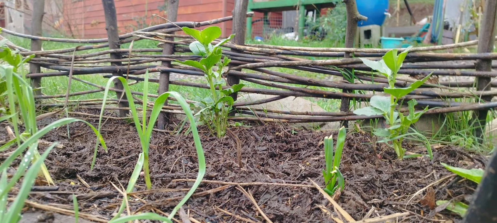
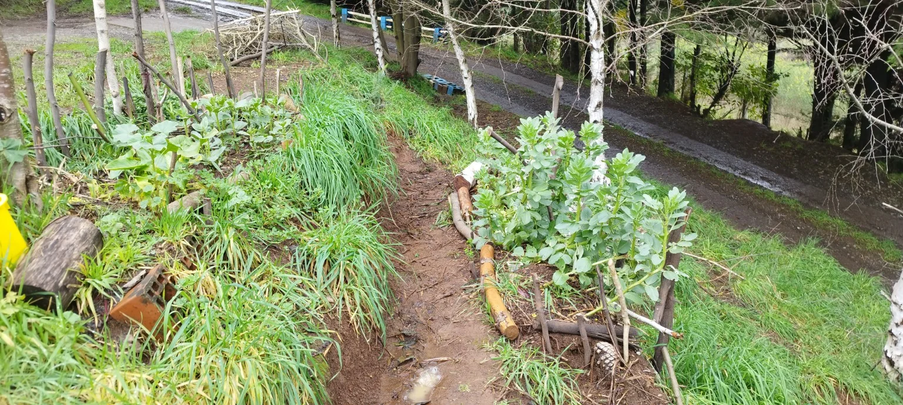
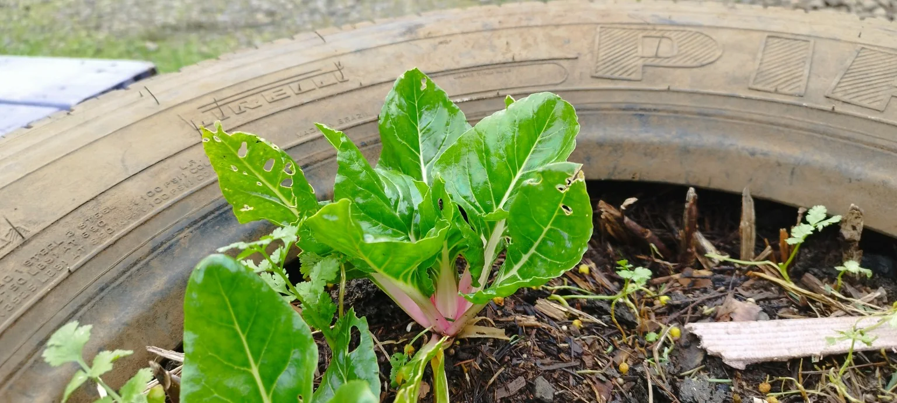
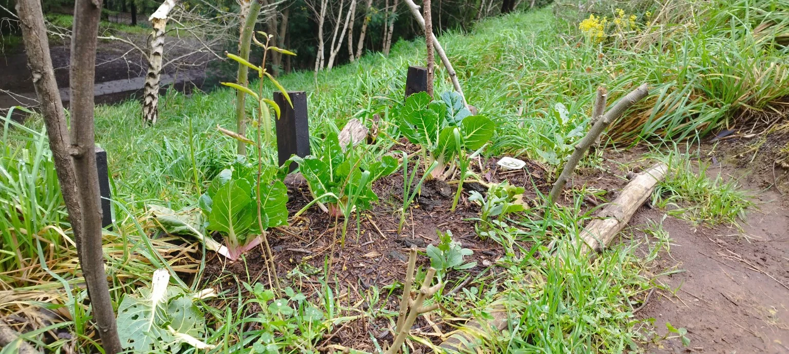
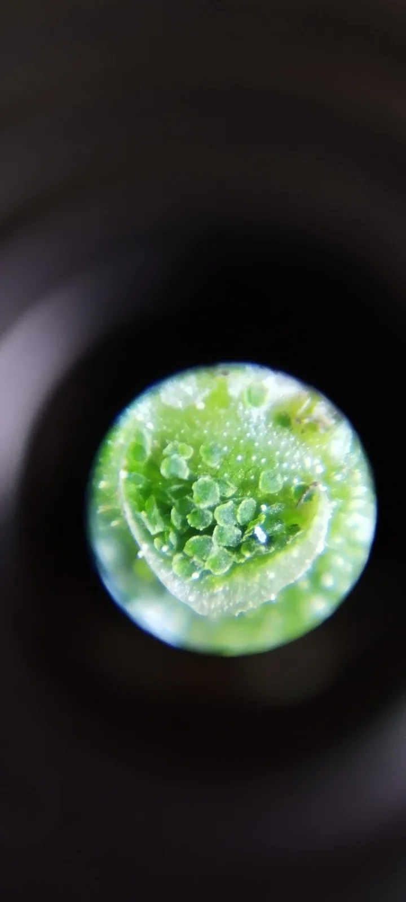
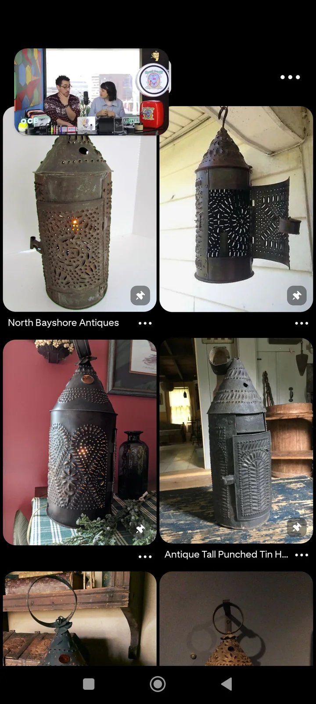
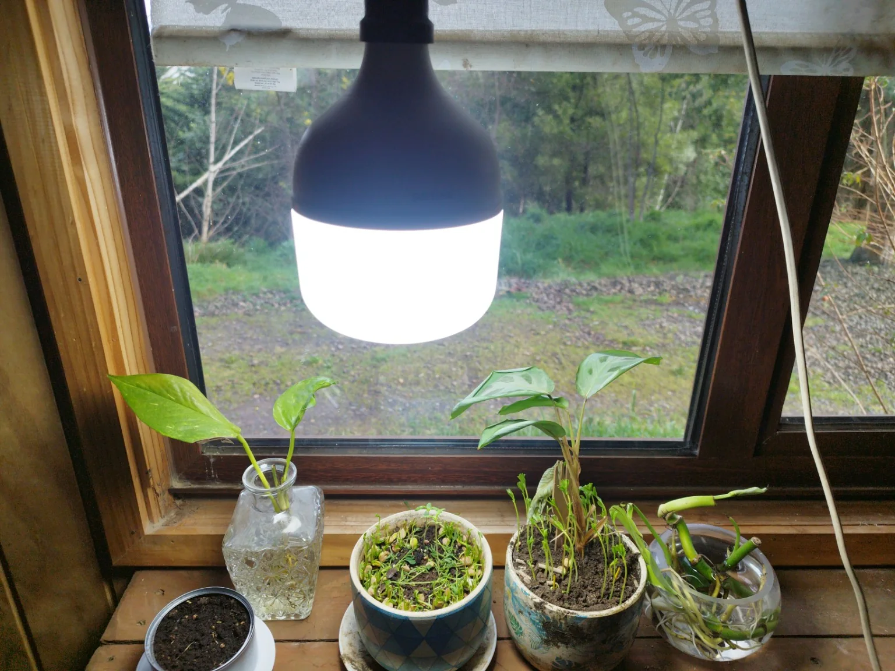
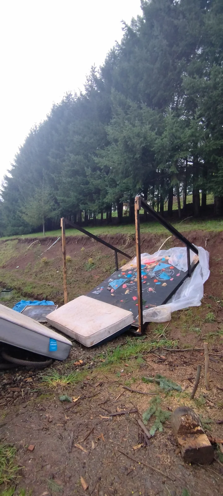
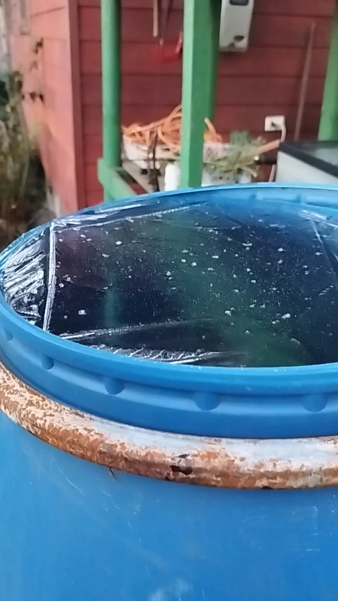

RESISTIENDO EL INVIERNO

Lo que alguna vez fue la huerta del verano. Ahora, aprovechando el invierno para experimentar y ver qué aguanta. Empezando a pensar la huerta de verano.






Lo que alguna vez fue la huerta del verano. Ahora, aprovechando el invierno para experimentar y ver qué aguanta. Empezando a pensar la huerta de verano.


El Santa Sara avanzaba siguiendo el río, con su gran saco de gas tensado sobre el casco. Era una bolsa inmensa de tela remendada, hinchada hasta volverse casi transparente en algunos sectores, sujeta por una red de cuerdas que crujía con cada cambio de viento. Más lejos navegaba un bote pequeño, apenas una plataforma de madera bajo un globo redondo, cargado con canastos y dos cabras inquietas.
Las granjas aparecían alrededor de los pueblos y después volvían a perderse entre bosque, cultivos y humedales. En una antigua torre cubierta de enredaderas funcionaba una estación de paso. Desde allí les hicieron señales para que bajaran y mostraran la carga.
Amapola respondió con una bandera distinta.
La primera significaba comercio. La segunda, que no tenían tiempo.
Después de una discusión breve, los dejaron continuar a cambio de llevar un saco sellado hasta la siguiente comunidad. Nadie preguntó qué contenía. En esas rutas, la confianza solía consistir en no hacer ciertas preguntas demasiado pronto.
15/06/26
Creo q si o si estamos en una transición de una forma de comunicación, transmisión y desarrollo de ideas. eso va de la mano del colapso de la forma anterior (redes sociales, internet ultra regulado, influencers y publicidad) y fijando los límites y buscando libertades en la forma que se viene (IA). Yo no entiendo nada de computadores asiq no tengo idea de donde agarrarme, pq la verdad estoy chato de la forma anterior.
02/08/26
Estoy haciendo hartas cosas. No quiero convertirlas al tiro en metodología, proyecto o producto. Por ahora quiero verlas juntas.

una lámpara colgando sobre el borde de una ventana y varias plantas tratando de convertirse en sistema.
todavía no sé si esto es un macetero modular, un ensayo doméstico o simplemente una buena escena.
luz prestada para un pedazo chico de futuro.
miré una planta demasiado cerca y por un rato dejó de parecer una planta.
también se puede entrar a un paisaje por un círculo de luz.

este es mi rincón de escalada, tal y como yo lo veo.
mojado, las colchonetas tiradas y el plástico puesto a medias.
las cosas que uno construye también pasan temporadas abandonadas.

un tambor azul. agua oscura. meto la mano. no ocurre nada.
igual lo grabé.
cuando era chico empesaron a haber los primeros PC en las casas, yo siempre fui super huaso para esas cosas, no entendia nada de lo que hablaban y hacian mis amigos.
ellos siempore entendian los programas y sabian bajar juegos y weas. a mi una vez me instalaron el Ares y asi sobrevivi mi adolecencia a pura musiquita nomas.
despues ellos empesaron a meterle mano a los PC y yo que aun no sabia descargar niun juego, obviamente asumi q ese no era mi mundo.
ahora, 20 años despues, aqui estoy, armado de chatgpt, intentando entender q mierda son estos chips y estos clabes de mi note viejo y intentando entender q mierda es Linux y preocupado de como chucha voy a rearmar esta wea xD
(ya no se usa el xd, cierto ?)
Hoy en dia el internet esta en manos de puras fotos profesionales y de productos. Puras weas perfectas y donde el fin es presentar un producto.
este es mi rincon de escalada, tal y como yo lo veo